Formato
Revista horizontal concebida para dobles páginas.
Edición editorial · Gastronomía
Una revista donde sabor, cultura y diseño convierten la gastronomía en relato visual.
Arrastra una esquina o usa las flechas para pasar página.
Abrir visor independiente ↗Brief · Propósito
Arte Culinario reúne recetas, cultura gastronómica y referentes culinarios dentro de una experiencia editorial dinámica y cercana.
El reto: organizar contenidos diversos con una identidad reconocible, atractiva y funcional.
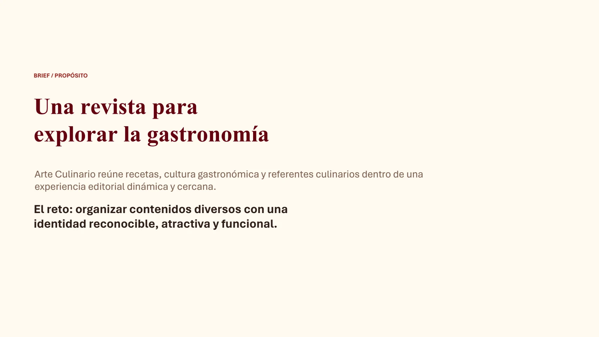
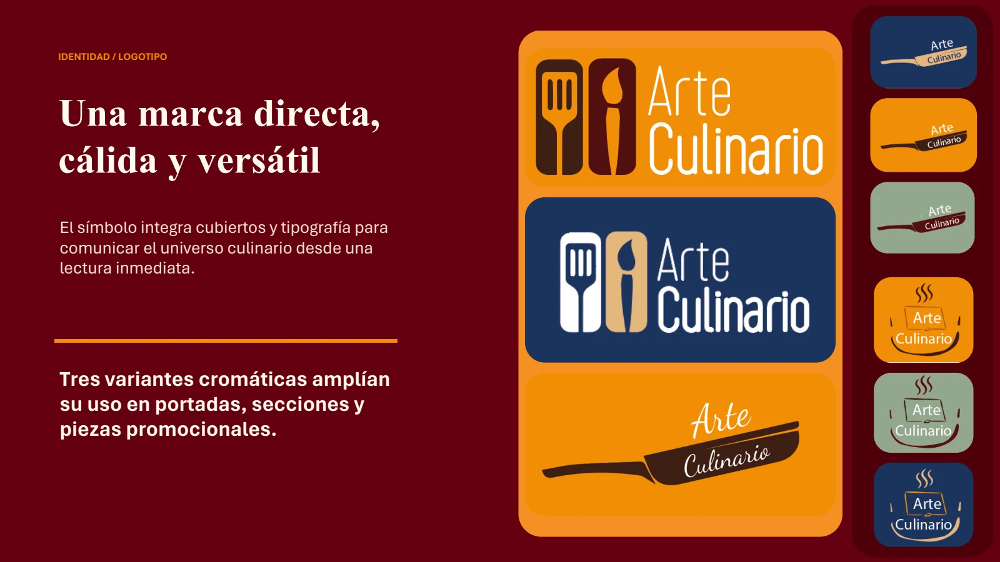
Identidad · Logotipo
El símbolo integra cubiertos y tipografía para comunicar el universo culinario desde una lectura inmediata.
Sistema · Retícula
Revista horizontal concebida para dobles páginas.
Columnas, márgenes y medianiles ordenan texto e imagen.
Títulos verticales, códigos de color y folios orientan la lectura.
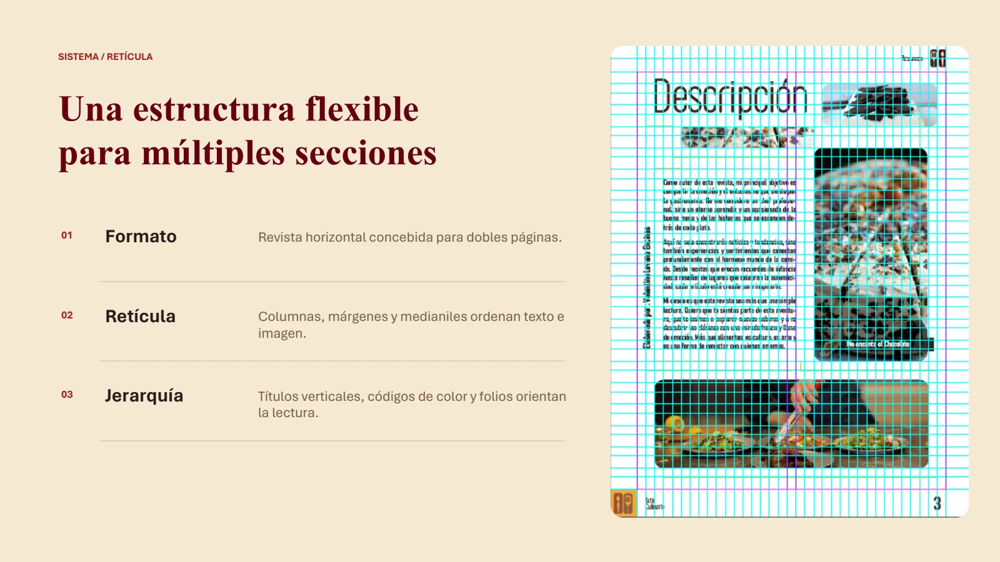
Concepto · Lenguaje
Elegancia y profundidad.
Títulos y llamados visuales.
Variedad y organización.
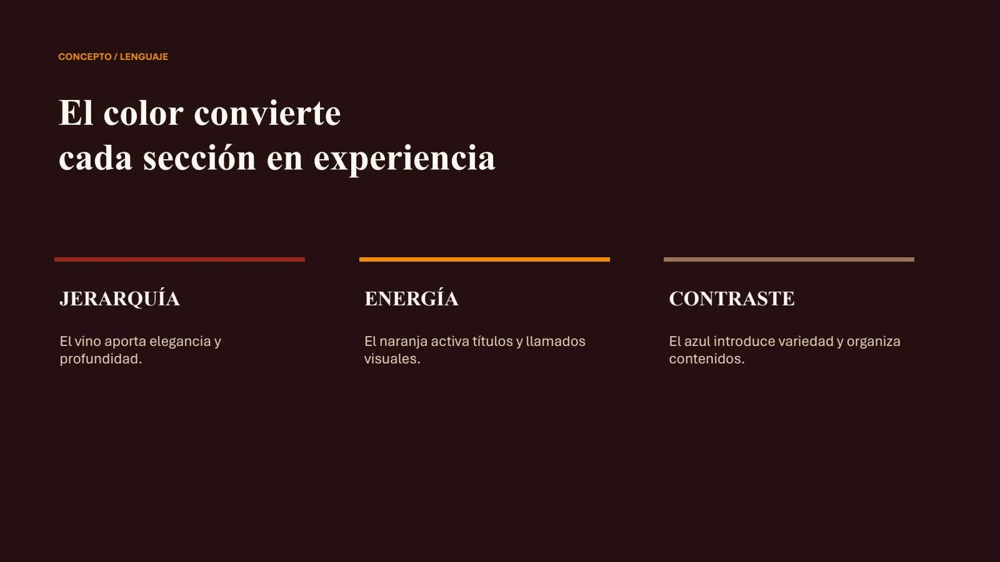
Portada · Diagramación
La portada combina fotografía, identidad y titulares para anticipar el contenido de forma directa. El sistema conserva unidad entre frente, reverso y códigos editoriales.
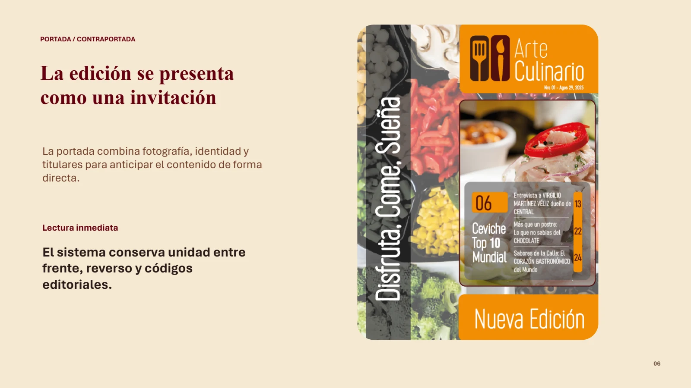
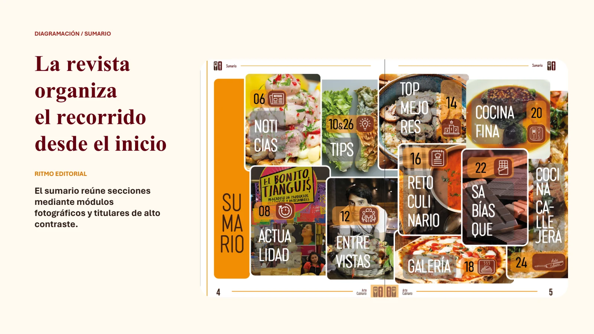
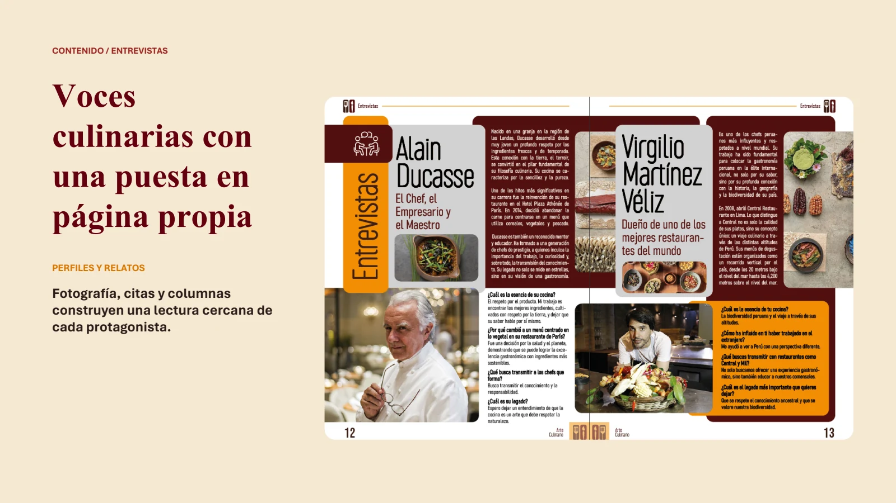
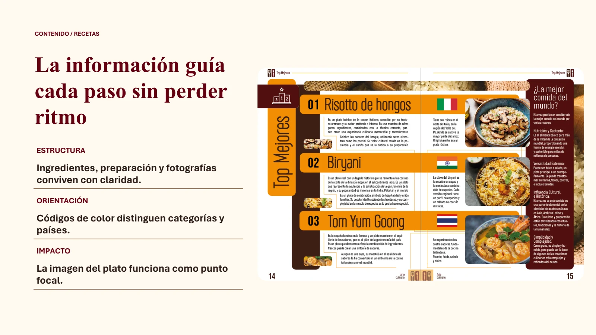
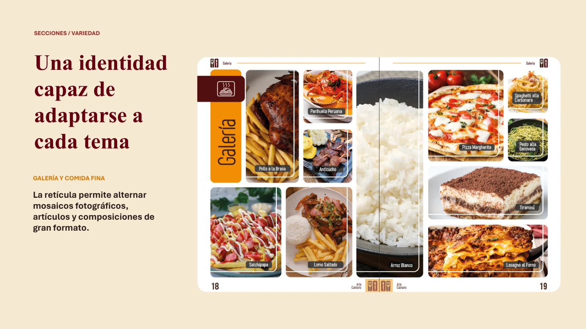
Aplicaciones · Mockups
Portada, doble página y edición física muestran la continuidad del sistema editorial.
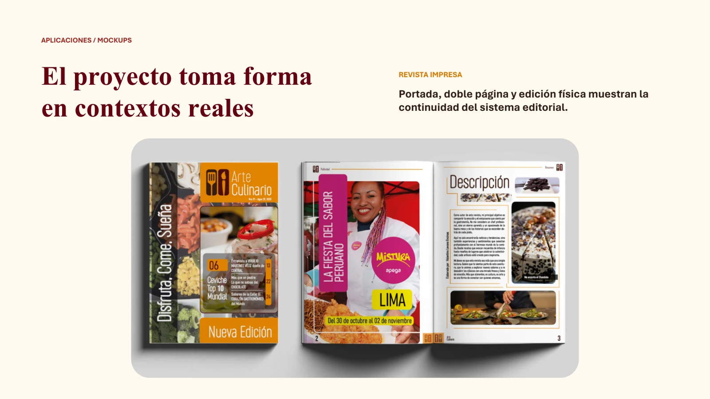
Resultado · Créditos
La retícula sostiene contenidos variados.
Color, fotografía y tipografía construyen reconocimiento.
La lectura combina información, inspiración y ritmo.
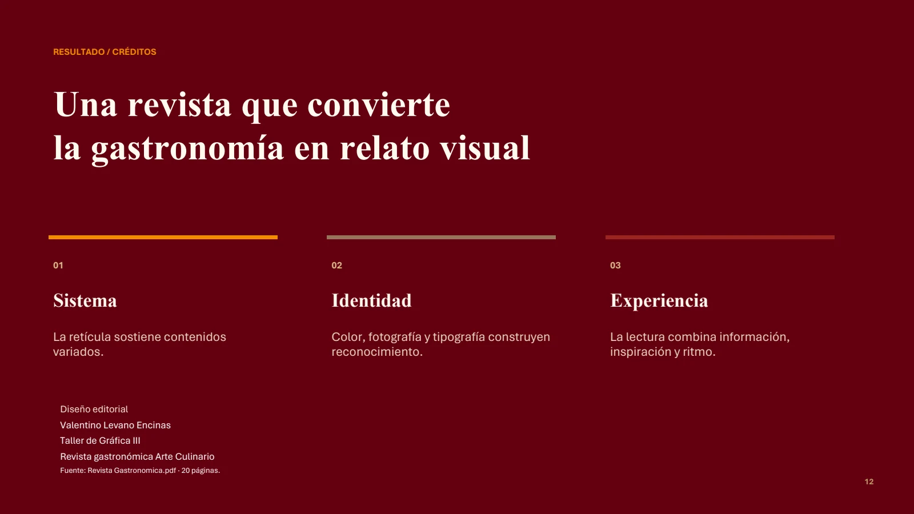